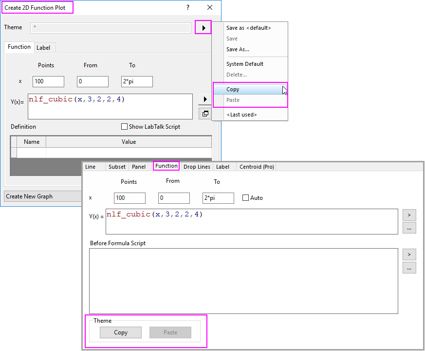
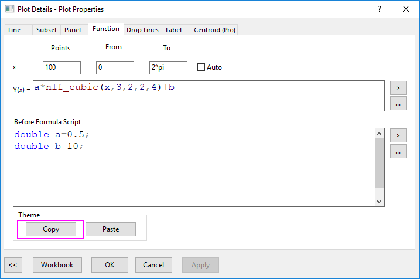
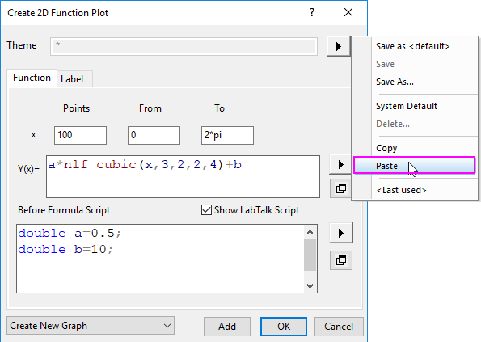

Designs in Funktionsdiagrammen verwenden
FuncPlot-UseTheme
Wenn Sie im Dialog Funktionsdiagramm erstellen oder auf der Registerkarte Funktion des Dialogs Details Zeichnung eine Funktion definiert/benutzerdefiniert angepasst haben, können Sie im Ausklappmenü Kopieren und Einfügen oder die Schaltflächen verwenden, um die Definition/benutzerdefinierte Anpassung zwischen Dialog Funktionsdiagramm erstellen oder auf der Registerkarte Funktion im Dialog Details Zeichnung zu teilen.

Beispiel:
- Nach dem Definieren bzw. Modifizieren einer Funktion auf der Registerkarte Funktion klicken Sie auf die Schaltfläche Kopieren in der Gruppe Design.
- 
- Wählen Sie im Menü Datei: Neu: Funktionsdiagramm, um das Dialogfeld des Funktionsdiagramms zu öffnen.
- Klicken Sie in dem aufgerufenen Dialogfeld auf die dreieckige Schaltfläche rechts von Design und wählen Sie dann Einfügen im Kontextmenü. Dies wendet alle Einstellungen von der Registerkarte Funktion des Dialogs Details Zeichnung an.
- 